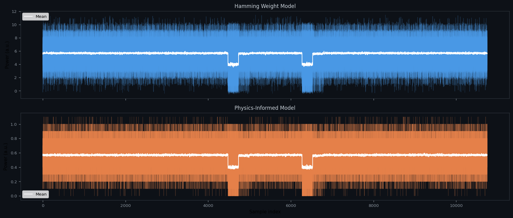
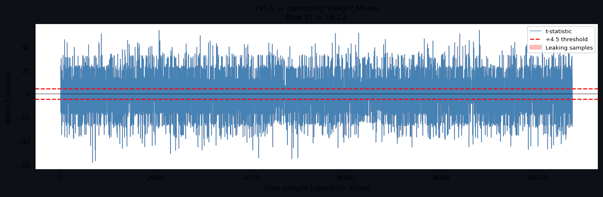
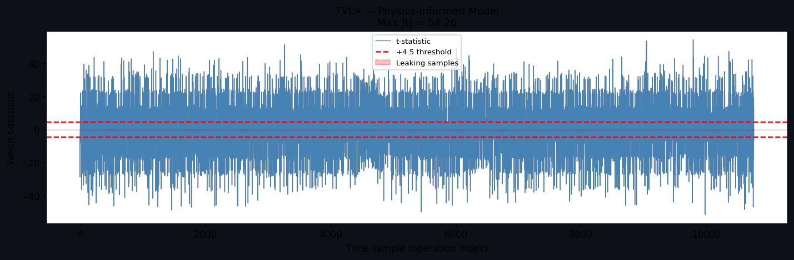
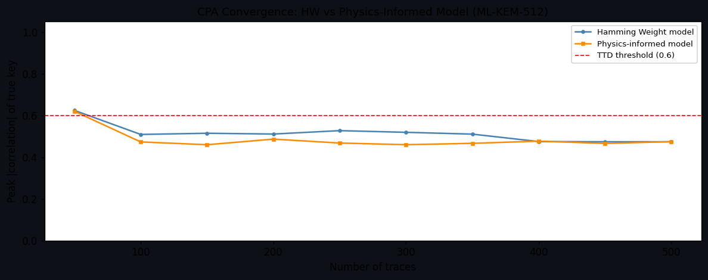
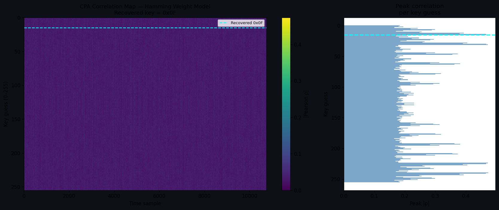

I built ML-KEM and ML-DSA from scratch, instrumented every NTT butterfly, and ran CPA and TVLA attacks against both a standard Hamming Weight model and a physics-informed CMOS model. The physics model attenuates CPA correlation by around 6% because HD-based switching noise doesn't line up with what the attacker's hypothesis assumes.
Side-channel attacks work because a chip's power consumption changes depending on what data it's processing. Someone with an oscilloscope and enough patience can statistically recover a secret key without ever breaking the math. Most SCA research models this with Hamming Weight, treating every bit as an equal contributor to power. That's a simplification CMOS doesn't actually follow.
I wanted to find out whether that gap between model and reality is measurable. Does a physics-based simulator produce traces that are genuinely harder to attack, and by how much? To answer that I first had to implement ML-KEM and ML-DSA correctly from the FIPS specs, which turned out to be the most time-consuming part of the project. The boundary condition bug in ML-DSA's Decompose function alone took two days to track down.
The standard SCA assumption is that power scales with the Hamming Weight of whatever value the chip is processing. It's a useful approximation, but real CMOS power comes mostly from dynamic switching: when a bit flips, the node capacitance charges or discharges through V². That's Hamming Distance, not Hamming Weight, and the two don't perfectly track each other.
When a CPA attacker applies a HW hypothesis to traces from this model, the HD component introduces noise that the hypothesis can't account for. That's the source of the ~6% correlation drop I measured. It's not random noise; it's structured noise from a fundamentally wrong model assumption.
A Tracer object sits inside the NTT and records each butterfly as
(op_name, old_value, new_value). The leakage model reads that log and
produces a synthetic power trace. For ML-KEM-512 decapsulation, one run gives
10,752 samples split across three regions:
| Region | Samples | What it computes | Secret-dependent |
|---|---|---|---|
kem_ntt_hi | 3,584 | NTT of ciphertext u | No |
kem_ntt_lo | 3,584 | NTT of ciphertext u | No |
kem_intt | 3,584 | INTT of Ŝ·û (secret times ciphertext) | Yes |
The kem_intt region is the attack target. Everything to the left of
sample 3584 in the trace plots comes from the ciphertext only, with no key information.
30 overlaid decapsulation runs. The noise texture is visibly different between the two models. The physics model (bottom) shows correlated structure from the HD term, while the HW model noise is more uniform across samples.

TVLA compares traces from a fixed input (same key, same message every time) against traces from a fresh random input. Any sample where |t| exceeds 4.5 is statistically leaking information tied to the secret. Both models come in well above that threshold because neither algorithm has any power-analysis countermeasures.


This is the main finding. As the attacker collects more traces, peak CPA correlation climbs for both models, but the physics model consistently lags behind. At N=500 the gap is around 6%. That's small but it's repeatable and systematic, and it comes entirely from the model mismatch rather than added noise.

The standard Kocher 1999 approach. The hypothesis is HW(k_guess XOR ct_byte[0]) for all 256 candidates. Pearson correlation is computed between each hypothesis vector and every time sample across all traces. Whichever guess produces the highest peak correlation is taken as the recovered byte.

During ML-KEM decapsulation the INTT computes Ŝ·û mod q, where û can be recovered from the ciphertext. The secret s has coefficients bounded by η₁=3, which means only 7 candidates per coefficient rather than the 256 a byte attack needs. I targeted one coefficient of Ŝ with the hypothesis HW(s_guess · û[i] mod q).
| Attack | Hypothesis | Candidates | Result at N=500 |
|---|---|---|---|
| Byte-level CPA | HW(k ⊕ ct[0]) | 256 | peak|ρ| = 0.49 (HW) / 0.46 (physics) |
| NTT-coefficient CPA | HW(Ŝ[i]·û[i] mod q) | 7 | Near zero, single-coefficient limitation |
| TVLA on ML-KEM | Welch t-test | n/a | max|t| = 81, threshold 4.5 |
| TVLA on ML-DSA | Welch t-test | n/a | max|t| = 70, threshold 4.5 |
Pure Python with no SCA libraries and no pre-built NTT. I used kyber-py 1.2.0 as a reference oracle to validate the ML-KEM output. The hardest bug to find was in ML-DSA's Decompose function. The FIPS 204 spec says that when r1 reaches (q−1)/(2γ2), you set r1=0 and subtract 1 from r0. My original code only triggered that branch for r = q−1, which is just one value out of all the cases that actually hit the ceiling. Verify was quietly returning False for months before I traced it back to that line.
| Component | Notes |
|---|---|
| ML-KEM-512/768 | FIPS 203, full keygen / encaps / decaps. NTT: ζ = 17BitRev7(k) mod 3329 |
| ML-DSA-44 | FIPS 204, full keygen / sign / verify. NTT: ζ = 1753BitRev8(k) mod 8380417 |
| Leakage models | HammingWeightModel and PhysicsModel with C=1fF, V=1.2V, α=0.5, β=0.1 |
| CPA | Pearson correlation, vectorised across all candidates at once via NumPy |
| TVLA | Welch t-test, fixed set uses same key and same message, threshold |t| = 4.5 |
| API | FastAPI with /run, /traces, /attack, /report |
| Tests | 25 passing, 15 for ML-KEM and 10 for ML-DSA |